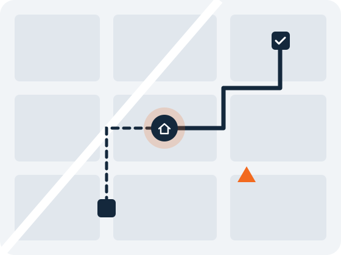
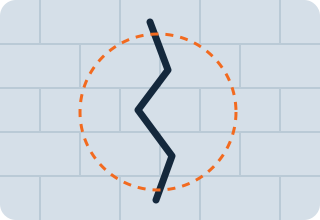

Lima Metropolitana y Callao
Prepárate para un sismo en tu barrio
Conoce el riesgo de la zona donde vives, revisa tu vivienda con un autodiagnóstico visual y define con tu familia por dónde evacuar. Todo en un lenguaje sencillo y disponible incluso sin internet.

¿Por qué prepararnos?
- +275 añossin un sismo de gran magnitud en Lima; el último, en 1746, fue de magnitud estimada 8.8.Fuente: El Comercio (2021), con datos del IGP.
- 68.5 %de las edificaciones estudiadas en Lima entre 2007 y 2014 se construyeron de manera informal.Fuente: Espinoza Sifuentes (2024), PUCP.
- 9.8 millonesde personas en 56 distritos de Lima estarían en riesgo muy alto ante un sismo mayor a 8.8.Fuente: CENEPRED, citado por Infobae (2026).
Conoce tu zona
Ubica tu vivienda y descubre el nivel de riesgo y el tipo de suelo.
Revisa tu vivienda
Responde un autodiagnóstico visual de 6 señales en unos 3 minutos.
Planifica tu evacuación
Elige tu ruta y punto de reunión y guárdalos para usarlos sin internet.
Para residentes y jefes de hogar
Hola, prepara tu hogar
Nivel de riesgo de tu zona
Ubica tu viviendaCuando ubiques tu vivienda verás aquí el nivel de riesgo.
- Nivel 1 · Bajo
- Nivel 2 · Medio
- Nivel 3 · Alto
Suelo de mi zona
Ubica tu vivienda para conocer el tipo de suelo.
Haz clic en el mapa sobre tu calle. Con teclado: enfoca el mapa, muévete con las flechas y pulsa Enter.

Revisa tu vivienda
Te mostraremos 6 señales que pueden indicar que tu casa es más vulnerable ante un sismo. Solo tienes que mirar y responder.
- Unos 3 minutos
- Con ejemplos visuales de cada señal
- No reemplaza la evaluación de un ingeniero
Señales de vulnerabilidad
Resultado
Recomendaciones para ti
Rutas desde tu vivienda
Puntos de reunión cercanos
Mapa sin conexión
Guarda tu mapa con rutas y puntos de reunión para verlo aunque no haya internet.
Mi plan familiar
Revisa la ruta y el punto de reunión que elegiste. Compártelo con tu familia.
Para brigadistas y personal de GRD
Gestiona el mapa de tu zona
- Ruta validada
- Ruta pendiente o en revisión
- Punto
- Peligro
- Vía bloqueada
Selecciona un elemento
Haz clic (o usa Tab y Enter) sobre una ruta, punto, peligro o vía del mapa para ver su detalle. También puedes elegirlo de la lista.
Elementos registrados
Mapa para campo
Guarda las rutas y puntos para consultarlos sin conexión durante tus recorridos.
Selecciona una ruta
Elige una ruta de la lista para revisarla y validarla.
Para adultos mayores y personas con movilidad reducida
Hola, ¿qué necesitas hoy?
Letra grande
Elige el tamaño que te sea más cómodo. Se aplica a toda la página y se recuerda en este dispositivo.
Sin resultados
No hay rutas sin escaleras desde tu vivienda.
Ruta alternativa accesible
- Ruta elegida
- Alternativa
- Desnivel
- Obstáculo
Mis apoyos registrados
Sobre ZonaLimaSegura
Somos un equipo de estudiantes de Ingeniería de Sistemas de Información e Ingeniería de Software de la UPC. Convertimos la información técnica del suelo y del riesgo sísmico en algo fácil de entender, para que cada familia sepa cómo está su vivienda y por dónde evacuar.
Los mapas, rutas y niveles de riesgo de esta página son datos de demostración de un sector esquemático. No reemplazan la evaluación de un profesional ni la información oficial del CISMID, INDECI o tu municipalidad.
- Lescano Pajuelo, Stephano Jhamill
- Quispe Perez, Karin Mirella
- Ramos Loayza, Sergio Daniel
- Reyes Trujillo, Yery Benjamin
- Rodriguez Diaz, Marcelo Fabian
- Tomas Bautista, Kiara Alexandra